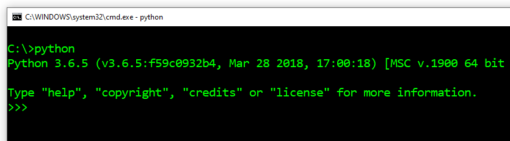

Увод у Пајтон¶
Пајтон је веома популаран програмски језик опште намене. Постао је познат по својој једноставности, лакоћи учења и брзини програмирања. Многи професионални програмери користе Пајтон бар као помоћни језик, јер помоћу њега брзо и лако аутоматизују разне послове. Због поменутих добрих особина користи га и све више људи других професија који се на свом послу служе програмирањем у различитим областима. Програмски језик Пајтон је бесплатан за употребу, па се око њега формирала бројна заједница која доприноси његовом даљем развоју и подршци на интернету.
На примеру програмског језика Пајтон се јасно види да професионални програмери нису једини који програмирају, као што ни професионални писци нису једини који пишу. Све је више послова које умерено познавање вештине програмирања може да учини нешто лакшим, успешнијим или продуктивнијим. Зато и овај приручник није намењен само будућим професионалцима у програмирању, већ свима који у својим пословима (и ван њих) могу имати користи од програмирања.
Сада ћемо се упознати са основама рада у Пајтону и видети како се пишу наредбе и програми у овом програмском језику.
Пајтон интерпретер¶
За извршавање програма које пишемо на Пајтону, потребан нам је програм који се зове Пајтон интерпретер. Овај програм тумачи (интерпретира), а затим и извршава Пајтон наредбе. Пајтон интерпретери могу да прихвате целе програме и да их изврше, а могу да раде и у интерактивном режиму, у коме се свака унесена наредба извршава одмах.
Окружење у коме се Пајтон интерпретер извршава назива се шкољка (енгл. shell). Постоје разне шкољке у којима одговарајући Пајтон интерпретер може да се извршава. Самим тим, имамо више начина да покренемо Пајтон шкољку.
Шкољка онлајн
Веб страна https://www.python.org/shell садржи једну онлјан шкољку, коју можете да користите одмах за интерактиван рад (довољно је да имате приступ интернету).

Инсталирање Пајтона и окружење IDLE
За учење програмирања на Пајтону свакако је корисно да преузмете Пајтон са адресе https://www.python.org/downloads/ и инсталирате га ако није већ инсталиран на вашем рачунару. Са инсталацијом Пајтона добијате и програм који се зове IDLE (integrated development and learning environment - интегрисано окружење за развој и учење). Ово интегрисано окружење садржи и шкољку у којој можете да извршавате Пајтон програме. Када покренете на вашем рачунару програм IDLE, добијате следећи прозор, у коме можете да радите интерактивно, али и да пишете и извршавате Пајтон програме.

Шкољка у командном прозору
Још један начин да покренете Пајтон шкољку је да отворите командни прозор (на Windows системима то се ради покретањем програма cmd), а затим у командном прозору откуцате Python (овде подразумевамо да је Пајтон инсталиран тако да је доступан из сваког фолдера, у противном треба се прво позиционирати у фолдер у коме се налази Пајтон интерпретер).
{kind=link}
У наставку можете да одаберете шкољку коју желите, у свакој од њих се ради на исти начин.
Интерактиван рад¶
Покрените Пајтон шкољку. Знаци >>> које видите представљају одзивник (енгл. prompt). Одзивником нам Пајтон интерпретер јавља да је спреман да прими команду.
Када радимо интерактивно, Пајтон интерпретер можемо да употребимо и као калкулатор - откуцамо неки израз и добијамо његову вредност:
>>> 3 + 2
5
>>> 3 - 2
1
>>> 4 * 2
8
>>> 4 / 2
2.0
За основне рачунске операције у Пајтону се (као и у већини програмских језика) користе следећи симболи:
сабирање:
+одузимање:
-множење:
*дељење:
/
Осим ових основних и најчешће коришћених, понекад су нам потребне још неке операције, које се користе нешто ређе. То су:
Цели део количника:
//, на пример вредност израза \(7 // 2\) је \(3\).Остатак при дељењу целих бројева:
%, на пример вредност израза \(7 \% 2\) је \(1\).Степеновање:
**, на пример вредност израза \(2 ** 4\) је \(2^4 = 16\).
>>> 7 // 2
3
>>> 7 % 2
1
>>> 2 ** 4
16
Рачунари разликују целе и реалне бројеве, различито их записују у својој меморији и на различит начин интерно рачунају са њима. Тако у програмирању 2.0 није сасвим исто што и 2, иако су вредности математички једнаке (знак == се користи за поређење две вредности).
>>> 2.0 == 2
True
>>> type(2.0)
<class 'float'>
>>> type(2)
<class 'int'>
Ово што видимо значи да је први број реалан, а други је цео (реч float означава реалне бројеве, а int целе).
У вези са тиме, приметимо да је у Пајтону резултат обичног дељења / увек реалан број, чак и када се деле цели бројеви и нема остатка. Када нам је важно да резултат дељења целих бројева буде цео број, треба да користимо операцију целобројног дељења //.
>>> 6/2
3.0
>>> 6//2
3
Код осталих наведених операција резулатат је цео број када су оба операнда (бројеви на које се примењује операција) цели бројеви, а реалан ако је бар један операнд реалан.
>>> 3 + 2
5
>>> 3.0 + 2
5.0
>>> 3 + 2.0
5.0
>>> 2.0 ** 4
16.0
Правила рачунања вредности израза су иста као у математици:
Операција степеновања се извршава пре осталих наведених операција. Ако има више операција степеновања у низу, оне се извршавају здесна налево.
Операције множења, дељења и остатка се примењују пре сабирања и одузимања. Када их има више у низу, извршавају се слева надесно.
Када нам је потребан другачији редослед рачунања, користимо заграде (прво се израчунава део у загради).
>>> (5-3) * (2+2)
8
>>>
Рад у Пајтон шкољци завршвамо тако што откуцамо команду quit().
>>> quit()
Рачунање - проверите разумевање
Проверите да ли сте разумели правила рачунања у Пајтону тако што ћете одговорити на следећа питања.
- 15
- Знак + означава сабирање, а знак * множење.
- 30
- Тачно!
- 50
- Обратите пажњу и на приоритет операција (исти је као и у математици).
- 125
- Знак + означава сабирање, а знак * множење.
Q-24: Која је вредност израза 5 + 5 * 5?
- 3
- Прочитајте поново о рачунању
- 0
- Обратите пажњу и на приоритет операција.
- 5
- Тачно!
- 6
- Знак % означава остатак при дељењу целих бројева.
Q-25: Која је вредност израза 4 + 11 % 5?
- 60
- знаци ** представљају степеновање
- 100000000
- Тачно!
- 1000000
- Операције степеновања се извршавају сдесна налево, тако да је a**b**c исто што и a**(b**c).
- 300
- Обе наведене операције су операције степеновања.
Q-26: Која је вредност израза 10 ** 2 ** 3?
- 1.666666
- Прочитајте поново о означавању и редоследу извршавања (приоритету) операција
- 1
- Прво се извршава целобројно дељење
- 11.666666
- Ознака // представља целобројно дељење.
- 12
- Тачно!
Q-27: Која је вредност израза 15 - 10 // 3?
- 5.0
- Тачно!
- 5
- Резултат овог дељења је увек реалан број.
- 1.0
- Прво се израчунава део у загради.
- 1
- Прво се израчунава део у загради.
Q-28: Која је вредност израза 15 / (5 - 2)?